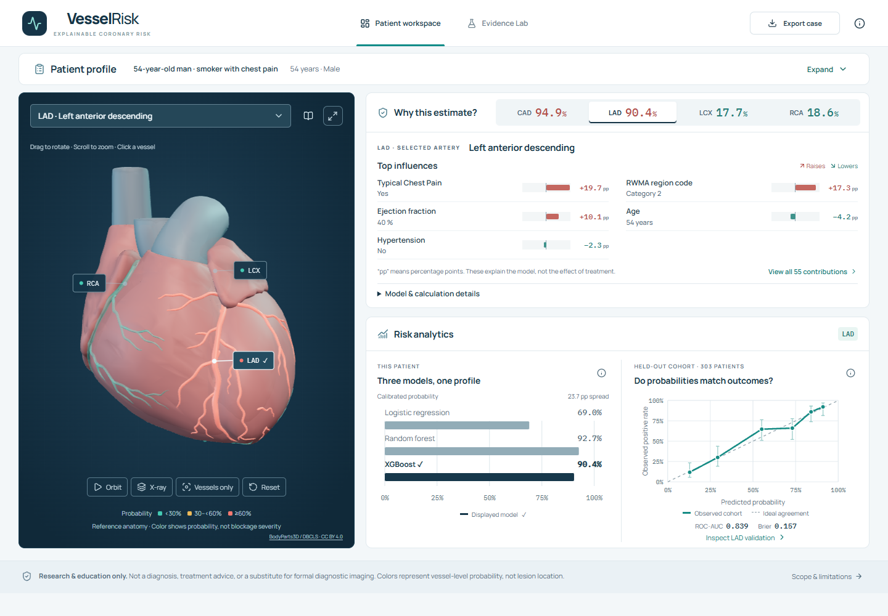
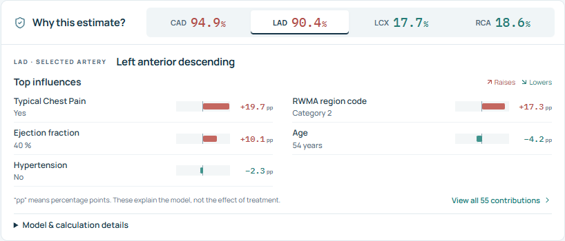
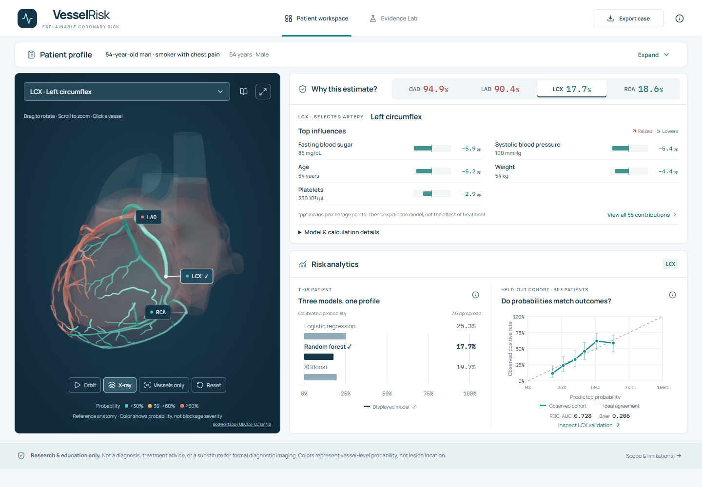
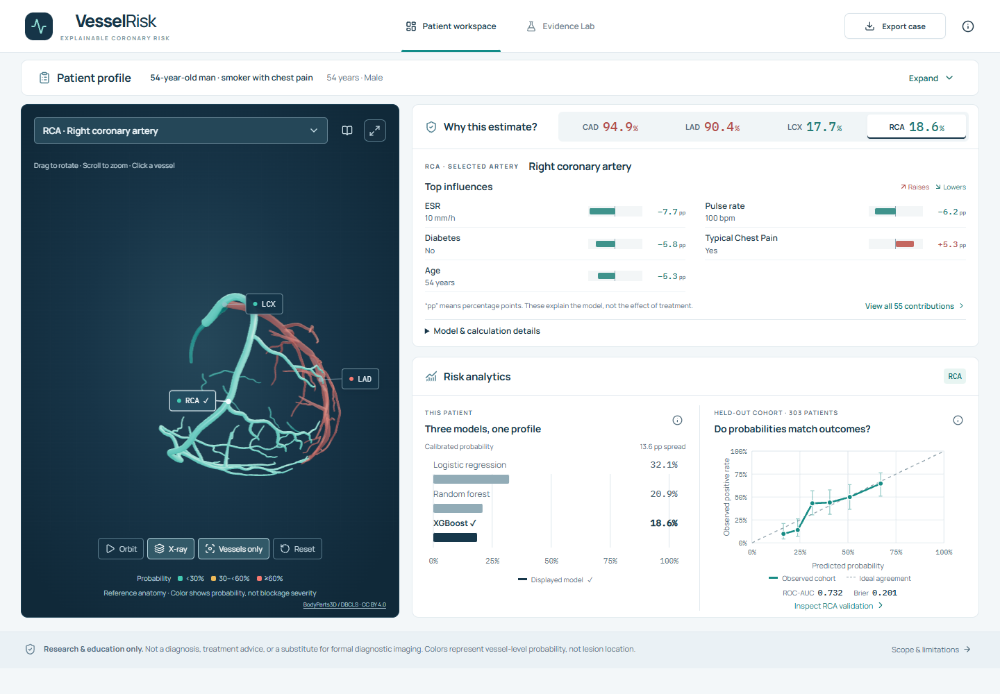
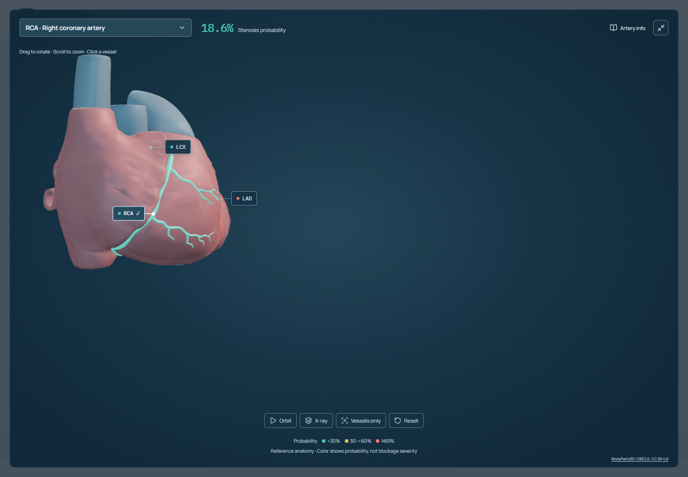
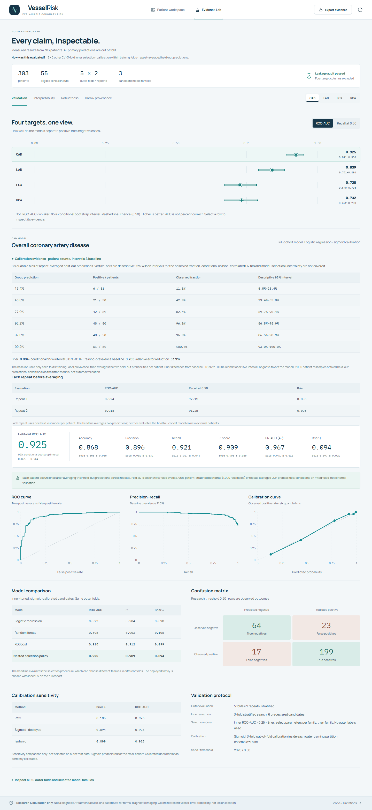
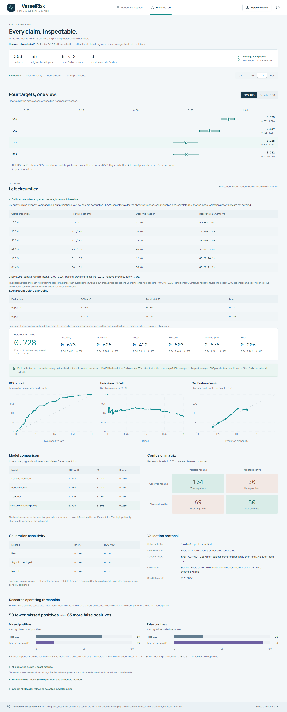
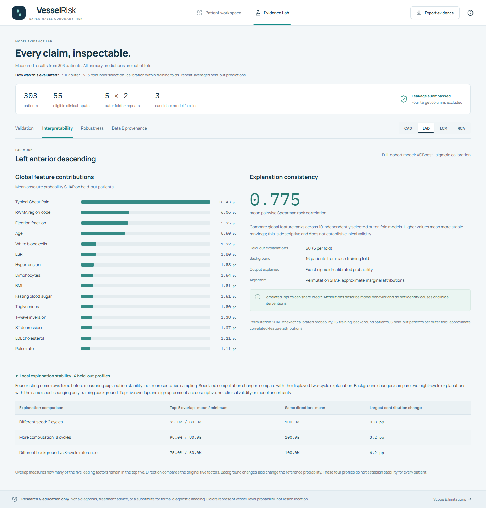
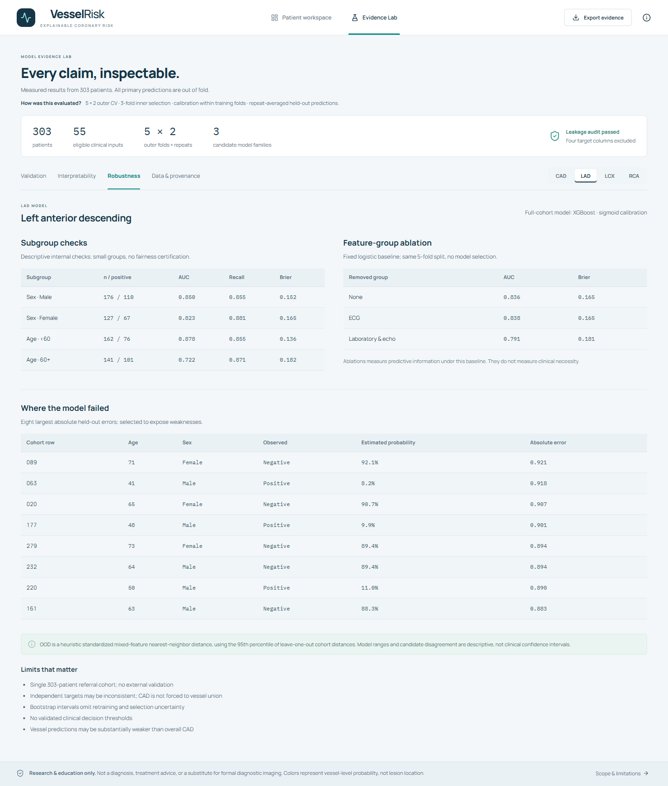
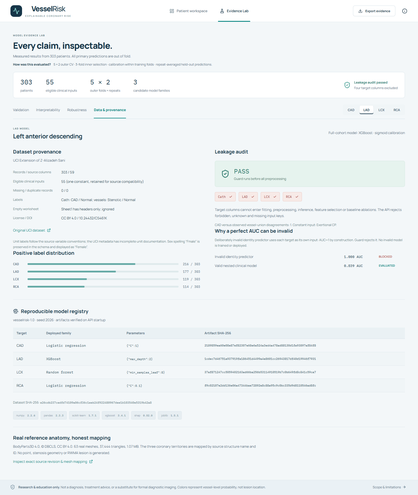

四模型 + 55 輸入 + 真實 3D + SHAP + Evidence Lab 已同步可靠性實驗、輸入來源與完整性驗證。測試、解壓驗證與版本範圍見 BUILD_VALIDATION.json。ZIP 包含 production build、models、assets、lockfiles 與 build/run 設定。
01 / 先看主畫面

實際 held-out mixed-vessel case：CAD 94.9%、LAD 90.4%、LCX 17.7%、RCA 18.6%。這是示範病例，不是平均驗證表現。點圖片看原尺寸。
02 / 產品各狀態

02-lad-shap.png
LAD selected; calibrated probability, model family and local SHAP in percentage points.
03-lcx-selected-xray.png
LCX mesh selected; corresponding LCX explanation; X-ray reveals coronary anatomy.
04-rca-selected-vessels.png
RCA mesh selected with vessel isolation; right panel shows RCA explanation.
05-expanded-heart.png
Expanded real 3D coronary anatomy; 63 source structures, individually mapped territories.
06-cad-metrics.png
CAD metrics, ROC, precision-recall, calibration, model comparison and confusion matrix.
07-vessel-thresholds.png
LCX fixed versus training-only research operating points, false-positive tradeoff and rejected expanded policy.
08-global-shap.png
Held-out global SHAP plus local seed, computation and training-background sensitivity evidence.
09-robustness-failures.png
Subgroups, ablations and largest held-out errors; uncertainty limits are explicit.
10-data-leakage-models.png
Class distributions, actual leakage guard, deployed families/hashes and anatomy attribution.0.50 基準的 LCX／RCA recall 是 0.420／0.395；training-only F1 research cutoffs 提高至 0.840／0.868，代價是更多 false positives、較低 precision／accuracy。兩種 operating point 均完整列出。303 人單中心 cohort，沒有外部 clinical validation；CI 不含重訓／選模 uncertainty。3D 是 generic anatomy，不是病人 scan 或 lesion localization。
03 / 真實數字
下列 headline scores 評估 repeated nested selection policy；deployed family 在全 cohort 另做 inner selection。不可將表中的 AUC 當作 final model 的 external-test 成績。PR-AUC 使用 average precision。
Deployed models（全 cohort inner selection 後重訓）
| Target | Family | Tuned parameters | Calibration |
|---|
| CAD | Logistic regression | {"C": 1.0} | Sigmoid / 3-fold |
| LAD | XGBoost | {"max_depth": 2} | Sigmoid / 3-fold |
| LCX | Random forest | {"min_samples_leaf": 8} | Sigmoid / 3-fold |
| RCA | Logistic regression | {"C": 0.1} | Sigmoid / 3-fold |
Primary results（每人兩次 held-out prediction 平均後計算）
| Target | Accuracy | Precision | Recall | F1 | ROC-AUC | PR-AUC (AP) | Brier | AUC 95% conditional CI |
|---|
| CAD | 0.867987 | 0.896396 | 0.921296 | 0.908676 | 0.925021 | 0.966715 | 0.094270 | [0.891216, 0.953654] |
| LAD | 0.788779 | 0.792746 | 0.864407 | 0.827027 | 0.838759 | 0.867752 | 0.157328 | [0.791001, 0.885574] |
| LCX | 0.673267 | 0.625000 | 0.420168 | 0.502513 | 0.727850 | 0.574641 | 0.206423 | [0.669665, 0.786450] |
| RCA | 0.660066 | 0.569620 | 0.394737 | 0.466321 | 0.731830 | 0.576796 | 0.201354 | [0.671628, 0.789781] |
Outer-fold mean ± SD（10 folds；非獨立樣本）
| Target | Accuracy | Precision | Recall | F1 | ROC-AUC | PR-AUC (AP) | Brier |
|---|
| CAD | 0.868142 ± 0.035003 | 0.901293 ± 0.032482 | 0.916913 ± 0.042994 | 0.908209 ± 0.025268 | 0.929693 ± 0.033019 | 0.970751 ± 0.015346 | 0.096788 ± 0.020998 |
| LAD | 0.765792 ± 0.049153 | 0.787391 ± 0.038273 | 0.821984 ± 0.079437 | 0.802584 ± 0.047558 | 0.827188 ± 0.029903 | 0.863374 ± 0.032498 | 0.162228 ± 0.015836 |
| LCX | 0.651776 ± 0.031983 | 0.585021 ± 0.067660 | 0.394746 ± 0.082971 | 0.467797 ± 0.067169 | 0.720816 ± 0.058384 | 0.601617 ± 0.066370 | 0.208924 ± 0.015896 |
| RCA | 0.673197 ± 0.059991 | 0.604358 ± 0.124037 | 0.425494 ± 0.112700 | 0.490345 ± 0.103503 | 0.729231 ± 0.058392 | 0.612812 ± 0.093123 | 0.204212 ± 0.020259 |
Class distribution / confusion matrix（threshold 0.50）
| Target | Positive | Negative | TN | FP | FN | TP |
|---|
| CAD | 216 | 87 | 64 | 23 | 17 | 199 |
| LAD | 177 | 126 | 86 | 40 | 24 | 153 |
| LCX | 119 | 184 | 154 | 30 | 69 | 50 |
| RCA | 114 | 189 | 155 | 34 | 69 | 45 |
Calibration sensitivity / Brier
| Method | CAD | LAD | LCX | RCA |
|---|
| Raw | 0.104626 | 0.158815 | 0.206175 | 0.204804 |
| Sigmoid | 0.094270 | 0.157328 | 0.206423 | 0.201354 |
| Isotonic | 0.098566 | 0.160198 | 0.206498 | 0.202103 |
Frozen probability-quality diagnostics
| Target | Brier conditional 95% interval | Training-prevalence baseline | Relative Brier reduction |
|---|
| CAD | 0.0735 / 0.1144 | 0.2047 | 53.9% |
| LAD | 0.1339 / 0.1819 | 0.2429 | 35.2% |
| LCX | 0.1896 / 0.2245 | 0.2385 | 13.5% |
| RCA | 0.1830 / 0.2205 | 0.2347 | 14.2% |
Local SHAP sensitivity: four predefined held-out profiles
| Target | Changed seed: mean top-5 overlap | Changed background: mean top-5 overlap | Largest background change |
|---|
| CAD | 85% | 75% | 10.7 pp |
| LAD | 95% | 75% | 6.2 pp |
| LCX | 95% | 75% | 3.9 pp |
| RCA | 95% | 75% | 8.4 pp |
Exploratory operating-point comparison（training-only F1；原模型保留）
| Target | Policy | Point | Accuracy | Precision | Recall | F1 | AUC | FP / FN |
|---|
| LCX | Frozen baseline | Fixed 0.50 | 0.673267 | 0.625000 | 0.420168 | 0.502513 | 0.727850 | 30 / 69 |
| LCX | Frozen baseline | Exploratory training-selected F1 operating point | 0.630363 | 0.518135 | 0.840336 | 0.641026 | 0.727850 | 93 / 19 |
| LCX | Expanded search | Fixed 0.50 | 0.689769 | 0.643678 | 0.470588 | 0.543689 | 0.722872 | 31 / 63 |
| LCX | Expanded search | Exploratory training-selected F1 operating point | 0.623762 | 0.513089 | 0.823529 | 0.632258 | 0.722872 | 93 / 21 |
| RCA | Frozen baseline | Fixed 0.50 | 0.660066 | 0.569620 | 0.394737 | 0.466321 | 0.731830 | 34 / 69 |
| RCA | Frozen baseline | Exploratory training-selected F1 operating point | 0.617162 | 0.495000 | 0.868421 | 0.630573 | 0.731830 | 101 / 15 |
| RCA | Expanded search | Fixed 0.50 | 0.673267 | 0.590361 | 0.429825 | 0.497462 | 0.733222 | 34 / 65 |
| RCA | Expanded search | Exploratory training-selected F1 operating point | 0.623762 | 0.500000 | 0.859649 | 0.632258 | 0.733222 | 98 / 16 |
04 / 最後的 ML methodology
- 最後一輪限縮實驗：LCX/RCA 加入 ExtraTrees 與 RBF SVM，各兩組參數；expanded nested policy 未通過預先設定的 AUC/Brier 改善門檻，四個 deployed model hashes 全部保留。
- Research threshold：只用 outer train 的 calibrated 3-fold inner OOF，在固定 .15:.01:.75 grid 最大化 F1；每人平均兩次 probability-minus-cutoff。LCX recall/F1 .840/.641、RCA .868/.631，precision .518/.495；FP 30→93 / 34→101、accuracy 降低。AUC/Brier 不变，workspace 保持 0.50。重用 outer splits 的 development evidence 不是獨立確認。
- Threshold 值與 retention decision 分開：前者 training-only，後者使用 pooled outer-test labels，只是 development audit。Evidence Lab 平等展示 Fixed 0.50 與 Exploratory training-selected F1 operating point，不依 retention 結果高亮 winner；不宣稱最佳 threshold 或獨立確認的改善。
- 資料：原始 XLSX 的 303 人、59 欄；55 個輸入，無 missing／duplicate rows。一筆 Cath Normal／LAD Stenotic 原始矛盾標籤保留，不自行改成 vessel union。
- 切分：seed 2026；5-fold × 2-repeat stratified outer CV；每個 outer train 內 3-fold inner CV 比較六個候選設定。沒有另宣稱一份未參與開發的 external test。
- 選模：inner ROC-AUC − 0.25 × Brier；先選每個 family 的參數，再選 family。Headline 評估 nested selection policy；不是 final full-cohort model 的外部成績。
- Preprocessing：numeric median imputation + scaling；categorical mode imputation + one-hot。全部在 pipeline 與 training fold 內 fit；無 global feature selection／SMOTE。
- Imbalance：Logistic regression 使用 balanced；Random forest 使用 balanced_subsample；XGBoost 使用 regularization。Class weights 只由各 training estimator 計算。
- Calibration：predeclared sigmoid，outer train 內 3-fold OOF calibration，ensemble=False；Raw／Isotonic 僅 sensitivity comparison，未用 outer test 選校準方法。
- CI：1,000 次 patient-stratified bootstrap，針對 repeat-averaged OOF；conditional on fitted folds，不含重新訓練／選模變異。Fold SD 是 descriptive，因 folds 重疊。
- Uncertainty：三 family disagreement + refitted-model min/max。Demo 只取排除此病人的兩個 outer models；新輸入取十個 outer models；不是 clinical confidence interval。
- OOD：standardized mixed-feature nearest-neighbor distance，以 cohort leave-one-out distance 的 95th percentile 為界，加上 observed single-feature range。未經外部驗證的 heuristic。
- Leakage guard：ml/schema.py 的 LeakageGuard／guard_columns，會拒絕 Cath／LAD／LCX／RCA（含大小寫／常見字元變體），接在 fit／transform 與 API validation；tests/test_validity.py 有真實 guard／fold／prediction checks。
- SHAP：對相同 calibrated probability 做 permutation SHAP；background 只來自 training partition；55 個原始 feature coalitions，兩個 local cycles；base + contributions 重建機率至 1e-6。近似且非因果。
- Demo honesty：目前八個案例依病人特徵選取，不是 evaluation sample；模型與 SHAP background 排除此病例。改值後仍用排除該 row 的模型；新 profile 使用全 cohort fitted model。
- Reliability：四個預先固定案例、四個 target 的 local SHAP seed／computation／training-background sensitivity，量化重疊與幅度，不能概括所有病人。校準六分箱加入人數、descriptive Wilson intervals；Brier bootstrap conditional on fitted predictions。完整 protocol／vectors／fingerprints：experiments/reliability/results.json。
- Integrity：checkpoint 比對 data／code／schema／seed／repeats／Python／libraries；API 載入前驗證八個 inference files，含 OOD。輸入來源逐欄追蹤並隨病例匯出；桌面 Chromium integration tests 已接入 CI。
05 / 3D 的實際做法
BodyParts3D 4.0 / DBCLS，CC BY 4.0；human-atlas derivative commit 1c38bf35c254a891200d3cedecfd57abebe83d8d。共 63 個真實 mesh、37,444 triangles、1,071,048 bytes。LAD 21、LCX 6、RCA 29 個 source mesh 各自分組，可獨立選取／上色；不是手畫線或 overlay。DOM 文字標籤只是投影到 mesh centroid。Source names／IDs、license、修改與 hash 位於 manifest 與 ATTRIBUTIONS。
風險映射：每組真實 coronary mesh 的 Three.js material 依該 target calibrated probability 由 teal → amber → coral 上色；等待預測時無虛構機率。可 rotate／zoom／pan／select／X-ray／isolate／expand。沒有 patient-specific scan、lesion coordinates 或 RWMA-to-lesion mapping。
06 / 完成狀態與尚未驗證
核心本機產品、訓練／evaluation artifacts、解釋、3D、Evidence Lab、report／demo script 與驗證已完成。Docker 執行未驗證（主機無 Docker）；尚未 remote deployment、final demo recording／YouTube upload、competition submission。Author／team／public links 與最後說法需提交者 review。
Run：專案根目錄 python scripts/start.py --setup；之後 python scripts/start.py。開 http://127.0.0.1:3000。Python 3.13 + Node.js 24 建議；不需 API key 或重訓。
研究／教育用途，不是 diagnosis、treatment advice 或外部驗證 clinical screening。OpenAI Codex 協助研究、實作、驗證與文案；模型結果從 supplied workbook 實際計算。